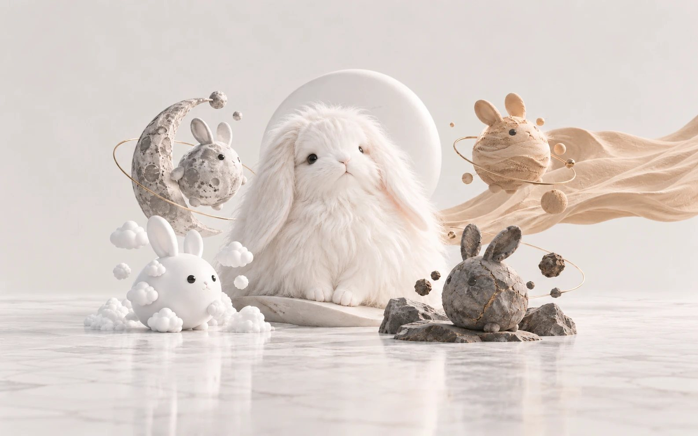
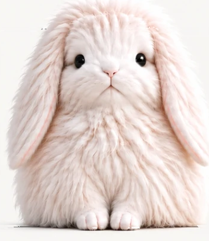
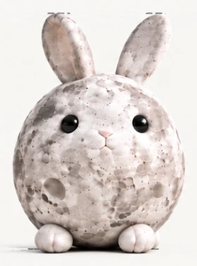
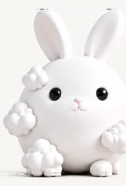
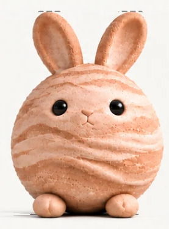
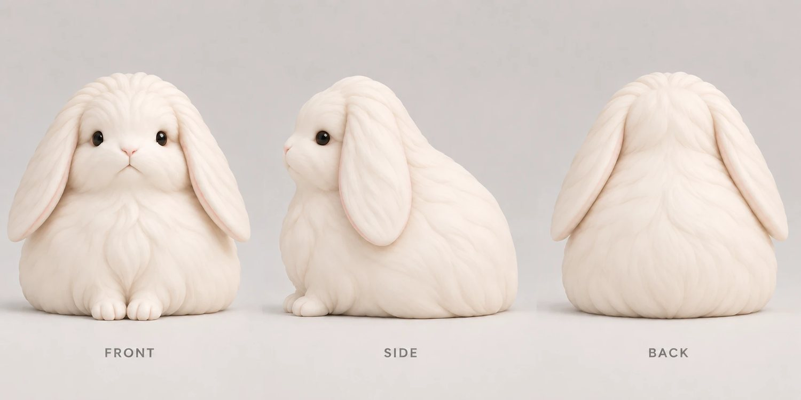
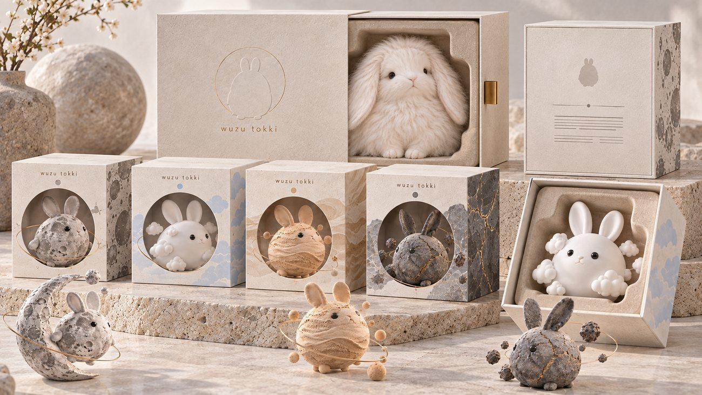
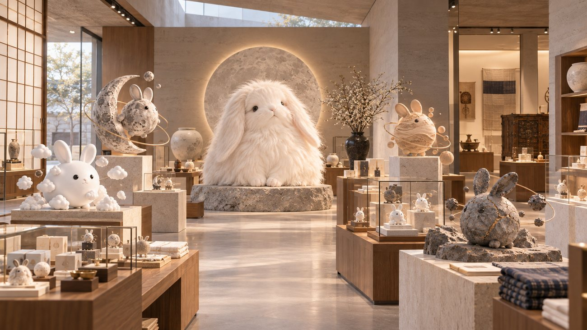
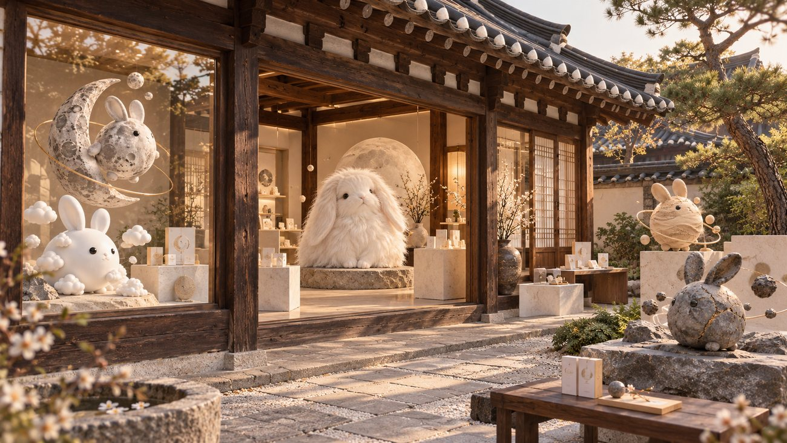

온 우주의 물질로
이루어진 토끼들
wuzu tokki · 우주토끼

어떤 물질은 쉽게 모양이 달라지고, 어떤 물질은 오래 흔적을 품습니다. 어떤 것은 흩어졌다 다시 모이고, 어떤 것은 단단한 채로 작은 균열을 지닙니다.
우주토끼는 그 성질로 우리의 서로 다른 모습을 바라봅니다.
같은 형태, 서로 다른 감각




앙고라토끼angora
길게 자란 털이 몸의 윤곽을 덮습니다.
나는 사람들 사이를 잇는 자리에 서 있을까요?
물성이 달라도 하나로 읽히는 건, 형태의 기준을 공유하기 때문입니다.
둥글지만 완전한 구형은 아닌 몸
바닥에 닿는 배와 발
언제나 있는 귀와 꼬리
통일된 얼굴 비례
장식보다 재료의 특징을 우선

자개, 푸딩, 모찌, 오로라, 바다, 아이스크림, 커피, 비눗방울, 태양, 크림. 캐릭터를 늘리는 게 아니라, 새로운 물질을 만날 때마다 세계가 한 겹씩 넓어집니다.
how you meet them
보고, 만지고, 모으고, 공간에서



실제 제품이 아니라, 경험의 방향을 보여주는 이미지 시안입니다.
당신은
어떤 토끼인가요?